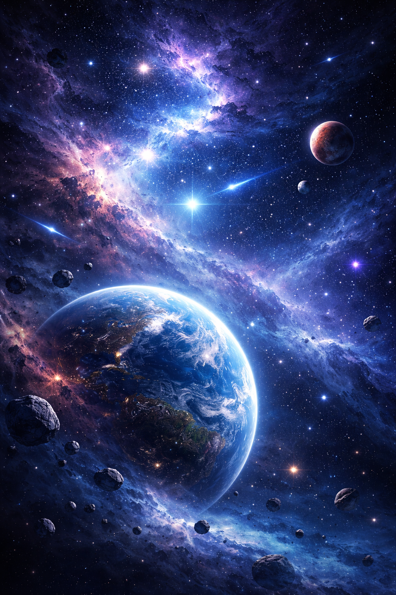

Space exploration has always captured human imagination. From ancient stargazers to modern astronauts, humanity has looked to the stars with curiosity and wonder. Early missions focused on understanding Earth's orbit and nearby celestial bodies.
The development of rockets in the 20th century marked a turning point. Nations invested heavily in space programs, leading to historic milestones like satellite launches and human spaceflight. These discoveries transformed science and technology.
Today, advanced telescopes and satellites allow scientists to study distant galaxies, black holes, and cosmic phenomena. These tools continue to expand our understanding of the universe and our place within it.
Modern space exploration includes missions to Mars, deep space probes, and private companies entering the field. Scientists search for signs of life while engineers design spacecraft capable of traveling farther than ever before.
The future includes colonizing other planets and mining asteroids for resources. As technology advances, humanity moves closer to becoming a multi-planetary species, opening a new chapter in our journey through the universe.
Collaboration between countries and organizations has made space exploration more efficient and innovative. International partnerships continue to push the boundaries of what is possible beyond Earth.